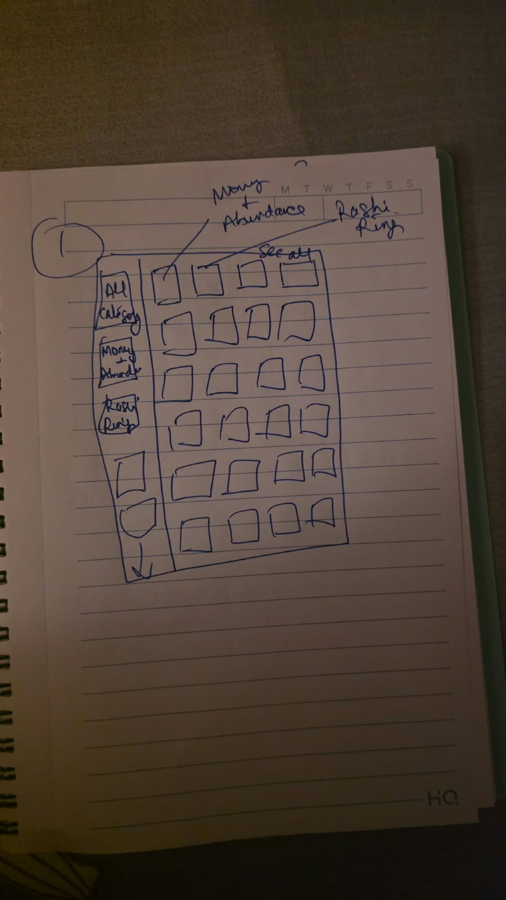
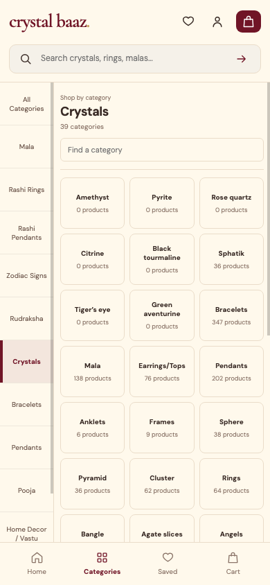
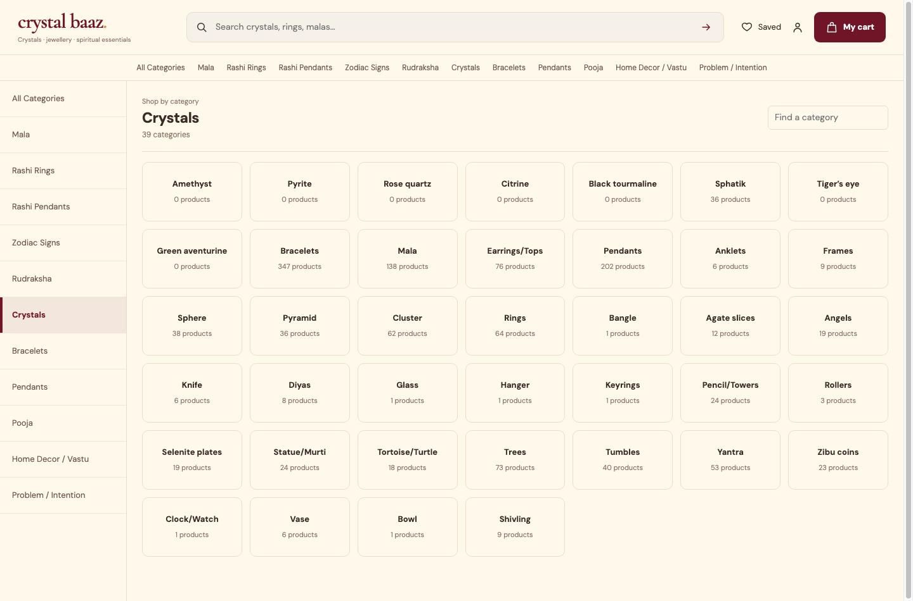
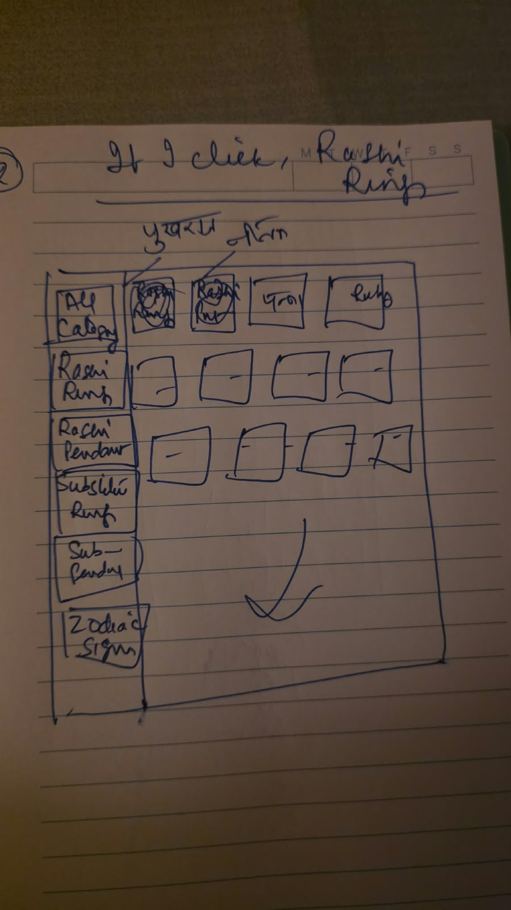
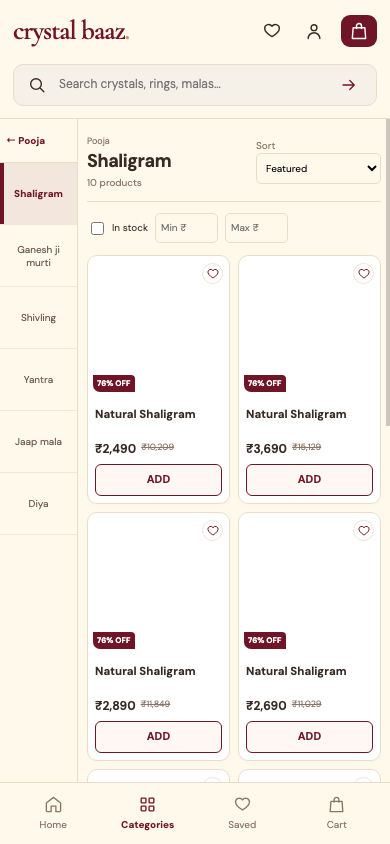
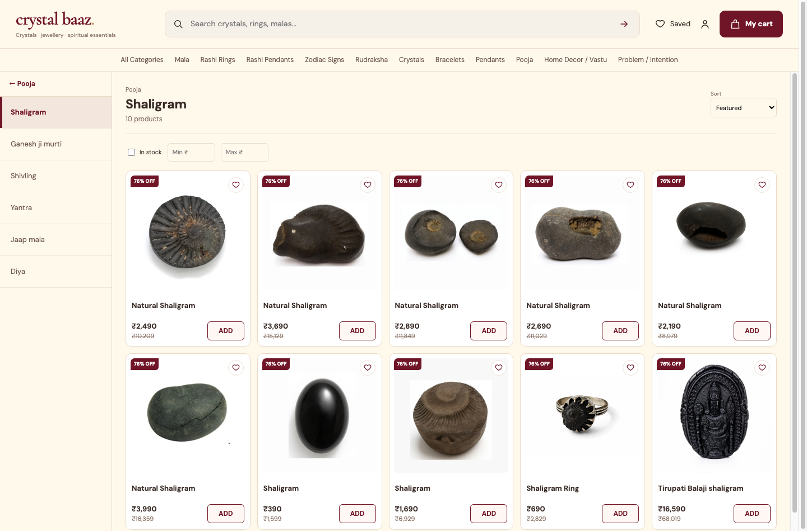

Crystal Baaz: client sketches → implemented shopping states
The same hierarchy component serves desktop and PWA. Client icons are pending, so category controls use accurate text labels. Product photographs and generated artwork are not used as category icons.
Source-data gap: Mala has 138 verified live products, but no declared Pearl/Ruby child hierarchy. Mala opens directly to products. The two-state screenshots below use the verified Crystals overview and Pooja → Shaligram membership to demonstrate the reusable behavior.
State A — Parent sidebar + subcategory overview

Client overview sketch.
Mobile: compact text cards, active parent, independent vertical panes.
Desktop: persistent parent navigation and compact overview grid.State B — Sibling sidebar + verified product grid

Client product browsing sketch.
Mobile: two product columns and direct sibling switching.
Desktop: compact grid, selected sibling, filters, sort and ADD controls.Full implementation and verification report · Actual Mala listing · Hierarchy gaps · Icon checklist